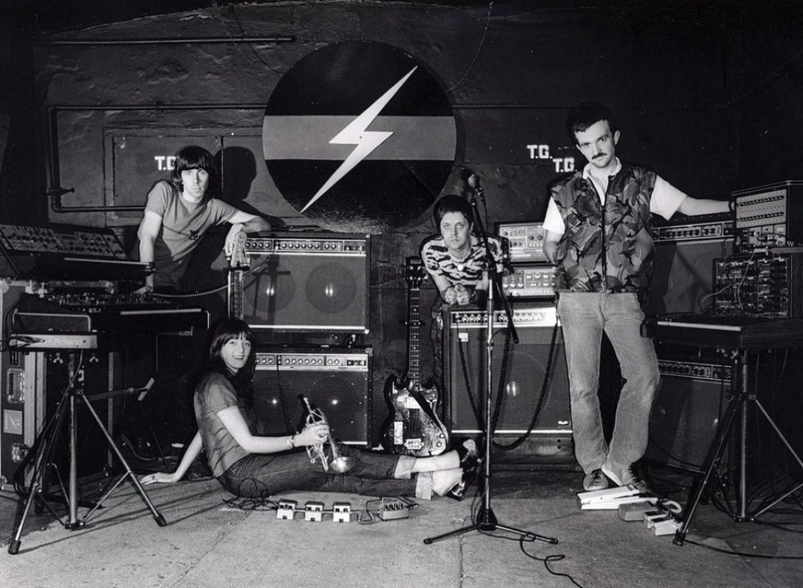

A pesar de toda la fealdad y la brutalidad incesantes que absorbió de su entorno urbano, es correcto decir que la música industrial fue el segundo florecimiento de una auténtica psicodelia. Por supuesto que, en una primera escucha, el ruido azotador de Throbbing Gristle y su retoño, la música industrial, parece estar insoportablemente lejos de la mística extática y bucólica de 1967. Las melodías de canción de cuna y las imágenes de cuento para niños de Syd Barrett, o las nostálgicas ensoñaciones arcádicas de The Byrds parecen más bien la antítesis de las canciones de Throbbing Gristle, en las que la inocencia solo figura como algo para ser profanado. En cuanto a la tranquilidad pastoril, baste con decir que cuando Throbbing Gristle posó delante de un idílico acantilado cubierto de verdísima hierba fresca que miraba hacia el Canal de la Mancha para la tapa de su disco 20 Jazz Funk Greats, solo se trataba de un chiste retorcido: esas pasturas en particular, conocidas como Beachy Head, son uno de los lugares preferidos de los suicidas a la hora de saltar.
Pese a todo lo anterior, la música industrial comparte mucho con la psicodelia...Pese a todo lo anterior, la música industrial comparte mucho con la psicodelia. El impulso primario de ambos géneros es volarle la cabeza a la gente a través de una sobrecarga sensorial multimedia. Los shows en vivo de casi todas las bandas industriales incluyen proyecciones de películas que fueron ensambladas siguiendo las técnicas de cut-up y efectos de luces extremos, cosas que hacen pensar, casi automáticamente, en los happenings y los acid tests de los sesenta. Richard H. Kirk, de Cabaret Voltaire, que editó parte de sus primeras “attic tapes” vía el sello de Throbbing Gristle, Industrial Records, describió los shows en vivo de su propia banda como “un mal viaje”. Tanto la psicodelia como la música industrial respondían al imperativo sonoro de que “ningún sonido habrá de quedar sin procesar”, abandonando en consecuencia las técnicas de grabación naturalistas a favor de un intenso procesamiento sonoro, los loops de cinta magnética y el ruido electrónico. La diferencia (y lo que hace que la música industrial sea una “auténtica” psicodelia y no un mero revival) es que la música industrial es una psicodelia invertida, una psicodelia que reemplaza la poética celestial por el vertiginoso fulgor de las entrañas del abismo cósmico.
También había conexiones históricas directas entre los freaks obnubilados por el ácido de finales de los sesenta y los estetas de la autopsia de finales de los setenta. El flyer para el primer concierto –o “desconcierto”, como ellos mismos lo bautizaron aprovechando el juego de palabras– en vivo de Throbbing Gristle, en 1976, describía al grupo como una banda de “trash postpsicodélico”. Era la pura verdad. El origen de Throbbing Gristle hay que rastrearlo en COUM Transmissions, un grupo de arte performático dedicado a destrozar tabúes sociales, que a su vez había comenzado como una banda de “cosmic rock” absurdista. En 1971, COUM actuaba como banda soporte de Hawkwind, el grupo más importante del underground “postpsicodélico” británico. Si uno mira fotos de Genesis P-Orridge tomadas alrededor de 1969, no hay nadie a quien se parezca más, con esa misma expresión cansina y tristona y esos mismos largos mechones de pelo llovido, que a Neil el Hippie de The Young Ones, la serie de televisión emitida por la BBC2 entre 1982 y 1984. De hecho, el verdadero nombre de Genesis P-Orridge también es Neil, Neil Megson. Y la lista de sus preferencias musicales (The Doors, Pearls Before Swine, The Fugs, Beefheart, Zappa) encajaba a la perfección con el clásico perfil de un head.